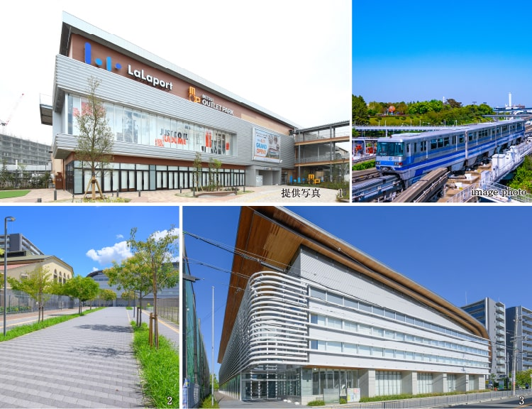
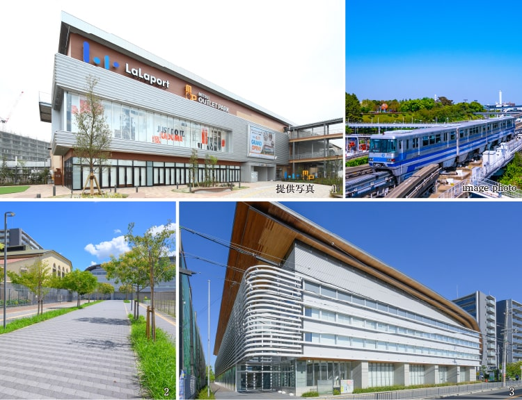
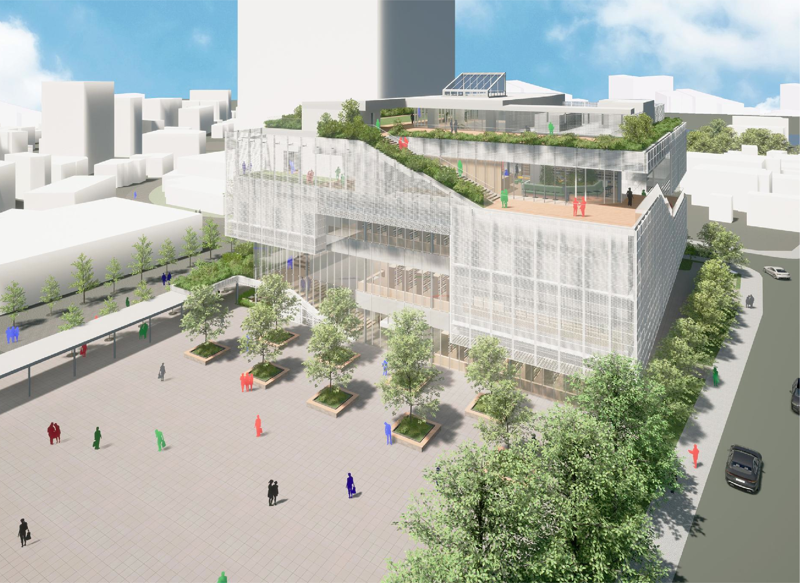
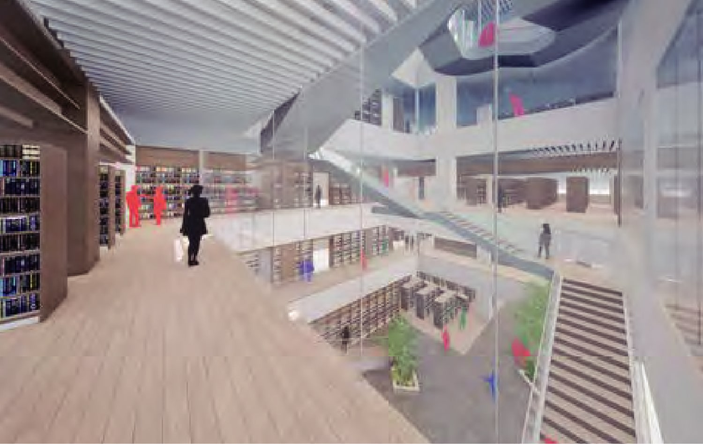
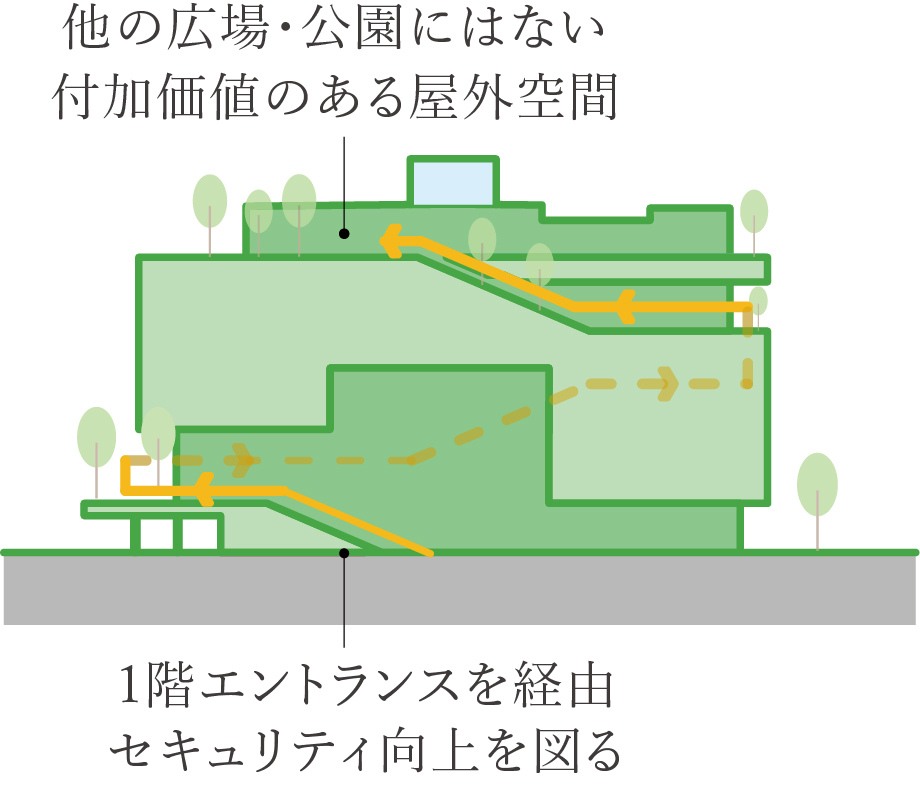
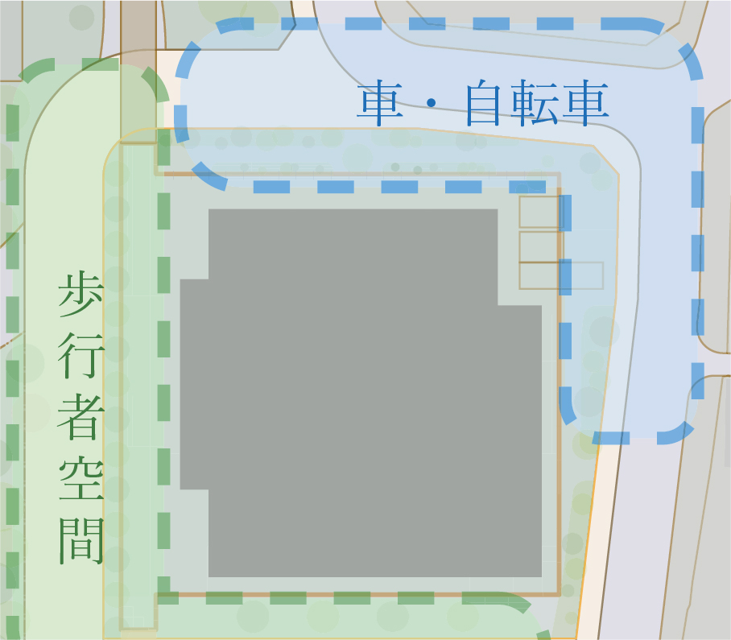

地域一体のコミュニティを育む文化と学びの交流拠点。
タワーマンションの南東側には、屋上へ人を引き込むスパイラルガーデンと
内部の吹き抜けが立体的なつながりを生み出す生涯学習複合施設が誕生予定。
図書館と文化会館の機能を併せ持つこの施設から市民活動と緑が溢れ出し、
街区全体に心地よい賑わいと潤いをもたらします。

外観イメージ
（株式会社遠藤克彦建築研究所提供）
-
周辺環境と呼応した
プログラム配置建物の西側には、街に開かれたカフェが入居予定。また、多様な利用シーンに適切に対応するべく、各階で明快に機能を区分したフロアごとのゾーニングを採用し、来館者が快適に過ごせる施設づくりを目指しています。
-

ギャラリーウォークイメージ
（株式会社遠藤克彦建築研究所提供）
※画像については実施設計中に詳細を検討していくため、実際のイメージとは異なります。
-
建物内外ににぎわいを生み出す
「スパイラルガーデン」建物周囲をらせん状に取り囲むテラス空間を設置。屋上には、読書の合間の休憩や子どもの遊び場として機能する屋上デッキが整備される予定です。
概念図
-
歩行者中心のまちづくりに寄与する
歩車分離の計画建物の軒下に歩行空間を創出。 また、歩車分離の動線によって、歩行者中心のウォーカブルな街づくりに寄与します。
概念図
出典：門真市ホームページ（2023年6月現在）